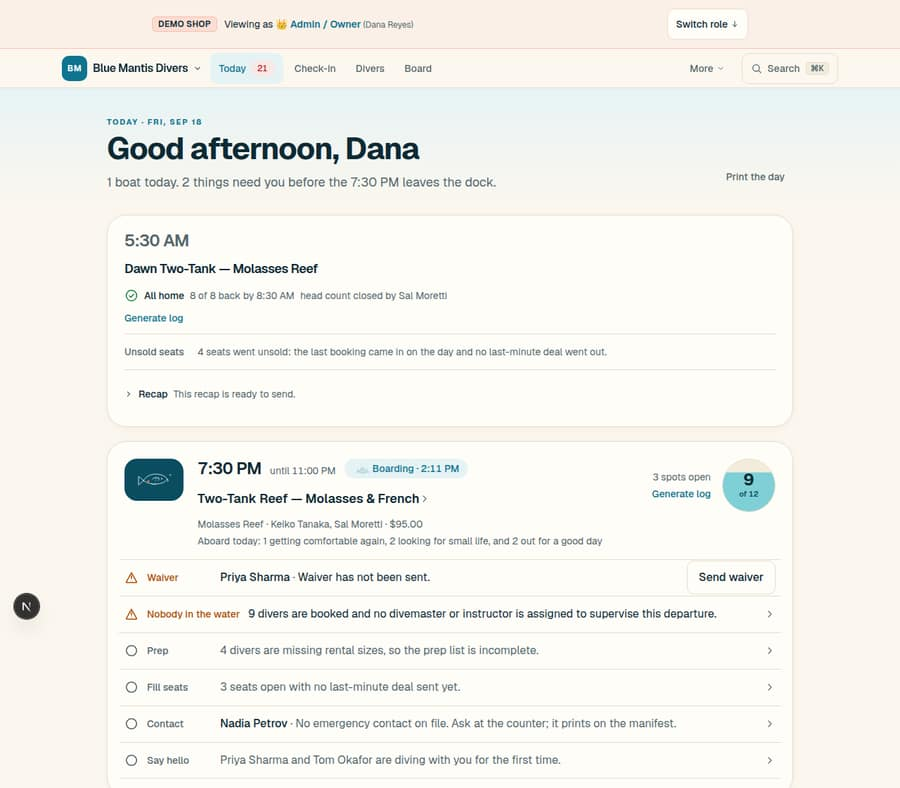
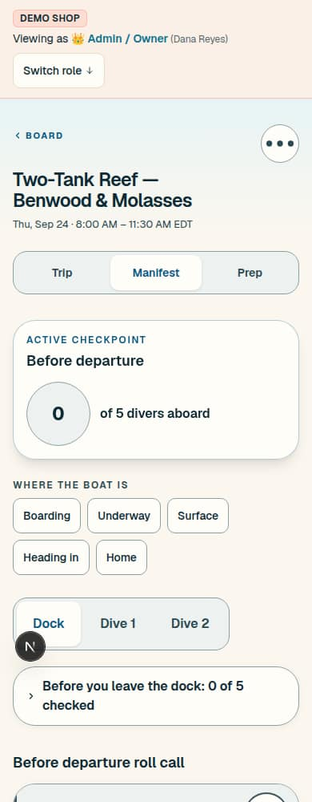

The brief: re-evaluate the whole app top-down the way an Apple designer would; very clean, elegant and delightful; a few options to pick from. This canvas answers with one diagnosis, one floor decided from what you have already said, and three directions drawn as finished products — the same six screens for the same shop on the same morning, so they compare by eye. There is exactly one call to make: which of the three.
The floor deletes every decoration and every second spelling. The three differ only in what carries the page: the group (A · Inset), the material (B · Glass) or the number (C · Figures).
C · Figures. It is the instrument you have asked for three times, in the only form Apple has ever shipped one — light, rounded, one tint — and it is built on A, so nothing of the list grammar is lost. A is the safe pick; B is the pitch.
The floor. Every row of it is a consequence of a sentence you said between 09-08 and 09-11: overbearing, ugly, too many controls, light renders light, farther from the cutesy. It lands first under any pick, and it is drawn into every frame here.


What to see. Count the kinds of thing between the top of the home and the first diver's name: a banner, a bar, a wash, an eyebrow, a greeting, a sentence, a link, a panel on a bed, a time, a chip, a title, a facts line, a drawn tile, a dial, then a glyph and a label before "Priya Sharma". Every one was added for a reason and none was taken away. Apple's test is simpler than any rule in principles.md: if a screen needs a label to explain what a thing is, the thing is not designed yet.
Every direction stands on these. Each is what one of your own sentences already implies, so none is a call; a pick is a pick of a direction on top of them.
| Rule | Today | Under every direction |
|---|---|---|
| One face, one ramp | Geist at nine sizes, a 44px greeting, 11px capitals for eyebrows and labels | Geist at six: 34 · 28 · 22 · 17 · 15 · 13, tabular figures. No capitals, no eyebrow, no greeting; the page's name is its title and the date is its subtitle |
| Two inks, one tint, two signals | Twelve colours on the home; lagoon, coral, shallows, sand, tideline, three washes | Ink and a secondary; the shop's colour on the current word and the one filled control (lagoon for a shop that set none); red is "can't board" and delete, amber is "needs a person", each always beside a word. No green on a staff surface — "Ready" is never shown |
| Nothing drawn | The water band, the site tile, the dial's water, the hand, coral in three places | All of it leaves every /shop/** page. The hand and the coral stay on the diver's recap only. This is H-77 b, answered by your own read |
| One shell | Four tabs, More with fifteen, ⌘K, a six-slot dock; twenty-one destinations | Today · Boats · Divers · Shop, and Search — a sidebar on a desk, a tab bar in a pocket. The twenty-one live under Shop and behind Search. A departure's four tabs are one page |
| One row | Eight anatomies; a glyph, a kind label, a sentence, a verb, a chevron | Name · why · a state word or its fix · chevron. The row's own tap is the door (shipped 09-17); a state is a word, never a pill |
| Two radii, concentric | 10 · 18 · 28 · pill, and a bed under every panel | Two rungs per direction, the inner set from the outer; nothing between them; nothing lifted at rest |
| Dark and glare | Light, the night palette, and boat mode by decree on the manifest | The device's scheme everywhere; the night palette is the one dark. Glare is a word in the roll call's and the counter's bar that turns the boat skin on for that phone |
| Creation is a sheet | Full-page forms behind "Add a departure", "Add diver", the walk-in | A sheet rises over the page you were on and leaves you there; a page is never a form |
| Safety, untouched | — | 44px targets, 16px critical text, AA, never colour alone; the roll call commits before it renders; the coral bans are moot because there is no coral |
Rounded white groups on a soft ground; a boat is a group whose first row is the boat; a need is a row; a large title, a sidebar, a tab bar.
For: the most learned grammar on any phone; the densest; the cheapest. Against: calm rather than striking — a demo says "that's nice". 2–3 sessions.
Content edge to edge with nothing around it; every control in one floating layer of frosted glass that shrinks as you scroll; one capsule for the page's act.
For: the most current thing on any phone this year, and no dive software has it. Against: glass is the least legible material in sun, so the rail needs its solid twin; the dearest. 4–5 sessions.
Every surface opens with the one figure it exists to show — large, rounded, in the page's own type, with a ring where a count fills — over Inset's groups and shell.
For: the morning read in a glance; the instrument, warm; built on A. Against: the dashboard is one bad decision away, so the rule is one figure per surface. 3–4 sessions.
Mantis II · closes 6:45 · 2 seats open
| A · Inset | B · Glass | C · Figures | |
|---|---|---|---|
| What leads | the list | the layer | the number |
| Chrome | a sidebar on a desk, an opaque tab bar in a pocket | a floating glass capsule on a desk; a floating tab bar and a search button in a pocket, shrinking on scroll | Inset's |
| A boat on the home | a group whose first row is the boat, its count at the right | a title with its count at the end, a line of facts, hairline rows | a row with its count at the end; the next boat's figures are the tiles above |
| A boat's page | groups: the boat's facts, the needs, the roster; Roll call filled | a title, one facts line, sections; Roll call as the capsule | a ring of here of booked with five facts beside it, then Inset's groups |
| A state | a word at the row's end, red for can't board, amber for needs a person; a dot before the name; never a pill — the same in all three | ||
| The roll call | the count at 34px, one circle per name | the count at 44px under a floating bar; the tab bar shrunk to one word | a ring that closes when everyone is aboard, one circle per name |
| At the rail, in sun | Glare turns the boat skin on | Glare turns every glass surface solid and the boat skin on | Glare: black on white, the ring included |
| At night | the app's own night palette, the shop's colour lifted — the same in all three; the glass goes dark and keeps its edge | ||
| The storefront | Harbor's face on the headings, the shop's colour on Book; groups | no chrome but the one capsule that books the next boat | two tiles — spots on the next boat, the boat that is out — then groups |
| Density on a desk | highest | middle | middle; the home spends its first 150px on tiles |
| Wow in a demo | low — it looks right | high — it looks new | high — it reads the morning for you |
| Cost | 2–3 sessions | 4–5 | 3–4, and A is its first slice |
| Honest risk | calm rather than striking | legibility in sun; dates with the fashion; backdrop blur on an old counter iPad | a second figure on a surface turns it into a dashboard |
C · Figures. Three reasons, in order. The product's own truth is counts — here of booked, aboard of expected, seats left, the month — and the manifest and the counter already lead with one; Figures makes the rest of the app agree with its best two surfaces. You have named the instrument three times and each time declined the drawing for its cold; this is the instrument without the console, and it is light because the page is light. And it composes: its lists, shell and rows are A's, so a session that builds C ships A on the way, and if the tiles ever prove too much the floor and the lists stand on their own.
A · Inset if the priority is the least risk for the most calm: it is two sessions of deletion, and every dive shop's front desk already knows how to read it. B · Glass if the demo matters more than the dock this season: it is the most striking page in the field, and it is honest about the price — a solid twin for every glass surface under glare, and a week more.
The one call (H-87): A, B or C. Nothing else waits on you: the floor is decided, the fiction is fixed, the storefront and the night are drawn for each, and the slices are in the ADR. A pick is one word in a session, and the first slice starts the same day.
The name and the mark. Harbor: a diver-facing page wears the shop's colour and face on the picked direction's rows. The dock test and the roll call's commit-before-render. Every message bundle, the clock, the timezone, the skeletons and instant = true. The claims policy. H-02. Every row of settled-questions.md. DiveDay's own marketing pages, which are another canvas's (#1881) and take the picked surface only when it lands.
The floor is one slice per row, in the order of the table above, and the first three (the ramp, the colours, the decoration) are a day. Then the shell, then the row and the group, then the picked direction's own parts — the glass layer, or the figure and the ring — one surface family per session: the home, a boat and its roll call, the counter, the people, the shop, the storefront. Each slice runs the design-implementation skill: the component names the ADR, a test pins the rule, the visual diffs are explained, and this README's slice table moves.
This cover, then the three boards in a row: each redraws the same six screens — the home and a boat on a desk; the home, the roll call, the night roll call and the storefront in a pocket. Compare the same screen across the three before reading any prose. Nothing here is normative. The ADR decides; code obeys the ADR.
Blue Mantis Divers, Key Largo, Thursday, August 27, 2026, 6:40 AM — the same shop and morning as every canvas since Clearwater, so these boards compare with last week's. Every name and number is demo-seed fiction; nothing is real customer data.
The canvas README carries the artboard table, the fiction and the slice table; ADR 20260918-nothing-to-explain carries the floor, the three directions and the call; H-87 in human-decisions.md is where the pick is recorded. The captures on this cover were taken from pnpm dev on 2026-09-18 and are never refreshed.